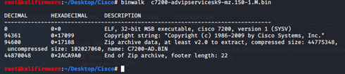

Cisco-IOS 分析
条评论Cisco IOS
简介
思科的IOS bin实际上是一个非常大的ELF文件。

高度集成，且非模块化，没有so文件这种。虚拟内存架构未完全实现，具有平面内存模型。
数据存储使用栈和堆，但是包括栈在内的所有内容都存储在堆中。
解压缩IOS固件
首先，iOS固件有使用修改后的pkzip格式进行压缩的，也有未压缩的，未压缩当然不需要解。压缩过的IOS，引导加载程序将会在运行时将固件解压缩。
实际上解压缩出来的文件中，有一个bin文件。这里用Cisco 7200举例，用binwalk识别一下，如下图。
可以看到有个Zip archive Data 部分，名为C7200-AD.bin ，它也是一个ELF文件。这个ELF才是主体，里面高度集成化。但是可以用IDA这类工具打开分析。
这里可以用Binwalk -Me把这个估计解压缩出来。
ELF –>e_machine
未压缩的IOS固件是标准的ELF镜像文件。但是，稍稍改动了ELF头部。以防止我们对固件进行逆向。头部结构简略的看如下：1
2
3
4
5typedef struct {
unsigned char e_ident[EI_NIDENT]; /* Magic number and other info */
Elf32_Half e_type; /* Object file type */
Elf32_Half e_machine; /* Architecture */
}
它改动的部分是e_machine 值，下面，我使用2个Cisco路由进行举例说明，Cisco 2600（未压缩），Cisco 7200（有压缩）。
Cisco 2600
固件为unzip-c2600-i-mz.121-3.T.bin，是基于PowerPC架构。用file 命令，和Binwalk工具识别一下，如下图。

从图上可以看到，这是一个未压缩的IOS，它就是一个ELF文件。那么，这个ELF的 e_machine字段原本是0x002B，对应的架构是SPARC Version9，如下图。
但是它是PocerPC架构，所以要修改为0x0014，如下图。
然后用IDA打开，就能被识别到是PowerPC架构。
IDA对arm，mips，powerpc这些架构的反汇编不是太好。这里换另一个工具Ghidra。如下图。能反汇编函数，效果比IDA好。

如果不对e_machine字段进行修改， Ghidra是无法识别出里面的函数的。
Cisco 7200
固件为c7200-advipservicesk9-mz.150-1.M.bin，这个固件是基于misp架构的。
从图上可以看到这个elf是压缩过的，中间还有个名为C7200-AD.bin的文件。
用Binwalk把它解压出来。对C7200-AD.bin 进行识别，可以看到似乎于前面的Cisco 2600固件类似。
来看看这个C7200-AD ELF 的 e_machine 字段值，为0x0019，如下图。0x0019对应的意思是“Reserved for future use”,保留字段。
如果直接把这个C7200-AD 放入Ghidra中，如下图。
在Language这一行，ghidra识别不了这个ELF文件是什么架构的，就无法反编译了。因为e_machine这个字段就是标明了该文件的架构。
所以，我们对这个e_machine进行修改，改为misp的值，即0x0008，如下图。
修改后，放入ghidra，这下就能看到识别为MIPS，如下图。
这个时候就能反汇编出里面的函数。
根据上面2个例子，首先要搞清楚这个IOS bin是什么体系结构。因为e_machine字段被修改了，需要手动调整。
DynaMips 模拟与调试
前面说了IOS bin文件压缩和未压缩的如何分析。它不像我们之前的路由器固件，可以解包解出里面的文件系统，有可能是squashfs，或者Cramfs等。
但IOS bin 就一个整体的，稍微改动了的ELF文件。
我们在进行仿真模拟的时候，根据EVE-NG官方的说明，对于有压缩过的IOS，使用下面这条命令，就能直接把 bin 文件做成 image文件，然后就能使用。
这里，我用前面的7200系列举例，命令如下：1
unzip -p c7200-advipservicesk9-mz.150-1.M.bin > c7200-advipservicesk9-mz.150-1.M.image
这条命令实际就是用unzip解压 c7200 bin，解压输出到 c7200 image里。它得到的 Image 文件与我们用binwalk 解出来的 C7200-AD.bin 一模一样。
这里用010Editor进行文件对比一下就能看出来，如下图。

第一个文件是C7200-AD.bin ，是用binwalk解出来的。
第二个文件是c7200-advipservicesk9-mz.150-1.M.image，用unzip命令得到的。
它们只有一个字段不一样，那就是e_machine。那是因为C7200-AD的e_machine 我在前面修改过，改为了0x0008。如果不修改也是0x0019，是完全一样的。
那么，DynaMips所运行的image文件就是这样来的。
另外，如果IOS文件没有压缩，就像前面说的cisco 2600，它就直接作为dynamips的image使用。
Dynamips-gdb-mod
要对IOS image进行调试，使用工具dynamips-gdb-mod工具。下面进行说明。1
2
3
4
5安装依赖：apt-get install libpcap-dev uml-utilities libelf-dev libelf1
下载dynamips-gdb-mod
# git clone https://github.com/Groundworkstech/dynamips-gdb-mod
# cd dynamips-gdb-mod/src
# DYNAMIPS_ARCH=amd64 make
若任然出现下图类似错误
编辑makefile，将第65行
LIBS=-L/usr/lib -L. -ldl /usr/lib/libelf.a $(PTHREAD_LIBS)
更改为
LIBS=-L/usr/lib -L. -ldl /usr/lib/libelf.a $(PTHREAD_LIBS) -lz
如下图。
下面，使用生成好的 dynamips 来加载要调试的IOS Image，命令如下：1
2
3
4$ tunctl -t tap1
$ ifconfig tap1 up
$ ifconfig tap1 192.168.153.1/24 up
$ ./dynamips -Z 12345 -j -P 7200 -s 0:0:tap:tap1 -s 0:1:linux_eth:eth0 C7200-AD.BIN
其中-Z是待连接的端口，-j：禁用JIT编译器，-P是模拟的硬件平台，-s的内容是指将Cisco设备的f0/0接口映射到linux的eth0，这之后C7200-AD.BIN是解包后的镜像。
还有其他参数，在文章最后给出说明。下图就是模拟成功，等待gdb client 连接。
在环境中安装好gdb，进入gdb，使用命令连接。注意端口是12345。
Target remote 192.168.153.1:12345
连接上之后输入命令 C，继续执行。那么，另一半的路由器就会继续执行。如下图。
接着需要进行一些路由器的初始化配置。经过一系列的配置之后，进到路由器控制端。如下图。
Gdb Client 这边已经可以进行调试。
到此，gdb调试IOS image文件完成。
./dynamips –h参数说明
1 | 可用选项： |
参考
【1】https://www.sco.com/developers/gabi/2000-07-17/ch4.eheader.html
【2】https://www.eve-ng.net/index.php/documentation/howtos/howto-add-cisco-dynamips-images-cisco-ios/
【3】https://www.blackhat.com/presentations/bh-usa-08/Chawdhary_Uppal/BH_US_08_Chawdhary_Uppal_Cisco_IOS_Shellcodes.pdf
【4】https://xz.aliyun.com/t/5697
【5】http://drops.xmd5.com/static/drops/papers-10045.html
【6】https://github.com/Groundworkstech/dynamips-gdb-mod